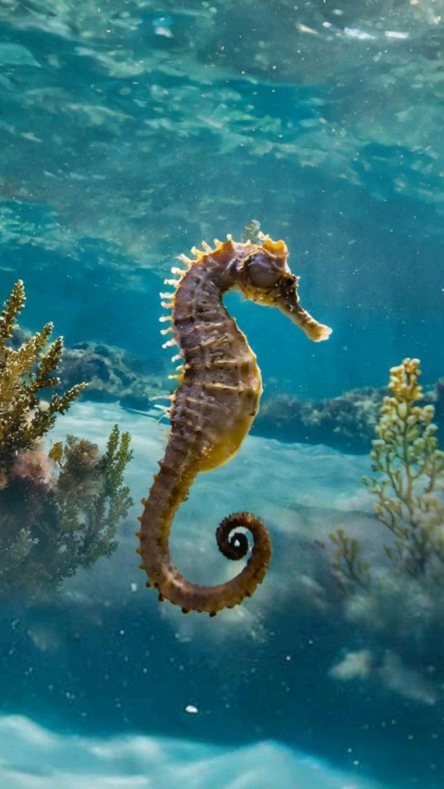

Surprising Seahorse Facts
Surprising Seahorse Facts

- Male pregnancy: The male seahorse carries eggs in a brood pouch and can give birth to thousands of tiny young after contractions that look like labor.
- Independent eyes: Each eye moves independently, so a seahorse can watch two different things at once, sneak attack mode engaged.
- No stomach: Food passes straight through them, so they must eat almost constantly (dozens of tiny meals a day).
- Terrible swimmers: They’re among the slowest fish; strong currents can carry them away, so they often anchor to seagrass with their tails.
- Natural armor: Their bodies are made of bony plates, flexible but tough, a design engineers study for protective materials.
- Unique coronets: Each seahorse has a distinct crown-like bump (a coronet) on its head, which is as unique as a fingerprint.
- Tiny newborns: Babies can be the size of a grain of rice and are entirely independent at birth, survival of the fittest starts immediately.
- Underwater clicks: They produce faint clicking sounds by rubbing skull parts together, a subtle form of communication.